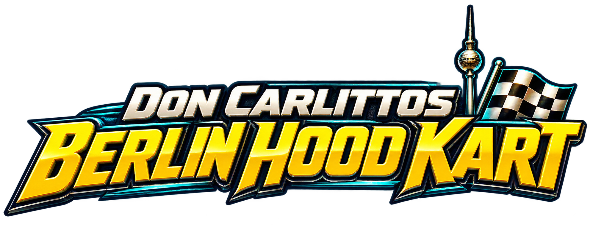

Zur Asset-Galerie
Dein Berlin.
Dein Rennen.
Fahrer wählen. Strecke aussuchen. An den Start gehen.
In einer Minute losfahren
- Den Geburtstagsgruß mit „Los geht’s, Pascal!“ schließen, falls er angezeigt wird.
- Schnellstart verwenden oder Fahrer und Strecke selbst auswählen.
- Mit W / ↑ Gas geben, mit A / D oder ← / → lenken und mit S / ↓ bremsen.
- In der Kurve Leertaste / Umschalt halten und weiterlenken. Für den Kurvenausgang wieder loslassen.
- Ein vorhandenes Item mit E / Enter einsetzen. Bei Bedarf mit R zurücksetzen.
Deine Steuerung
| Aktion | Taste |
|---|
| Beschleunigen | W / ↑ |
| Bremsen | S / ↓ |
| Lenken | A / D oder ← / → |
| Driften | Leertaste / Umschalt |
| Item einsetzen | E / Enter |
| Kart zurücksetzen | R |
| Pause / fortsetzen | Escape |
| Kamera wechseln | C |
| Fahrer in der Garage wechseln | A / D oder ← / → |
Gut durch den Kiez
Bremse vor engen Kurven. Übe Drifts zunächst dort, wo du Platz hast. Behalte Platzierung, Rundenanzeige, Driftladung und dein Item im Blick. Fahre die Strecke vollständig ab – Checkpoints gehören zur Rundenwertung. Mit C probierst du die drei Kameraansichten aus.
Zwölf Maps
Kotti Kreisverkehr · Sonnenallee Sprint · RAW und Oberbaumbrücke · Leopoldplatz Ring · Alex und Fernsehturm · Mauerpark Hang · Nollendorf Neon · Westhafen Docks · Ku’damm Gold · Tempelhof Runway · Plattenbau und Pagode · Badeschiff und Molecule
Für Pascal
Alles Gute zum Geburtstag!Dieses Berlin gehört dir. Such dir deinen Kiez aus und fahr deine erste Runde.
Stand 24. Oktober 2026. Tastaturbelegung anhand des aktuellen Spiels geprüft. Touch und Neigungssteuerung hängen von Gerät und Einstellungen ab. Neue Landmark-Modelle sind gesondert einzubauen.